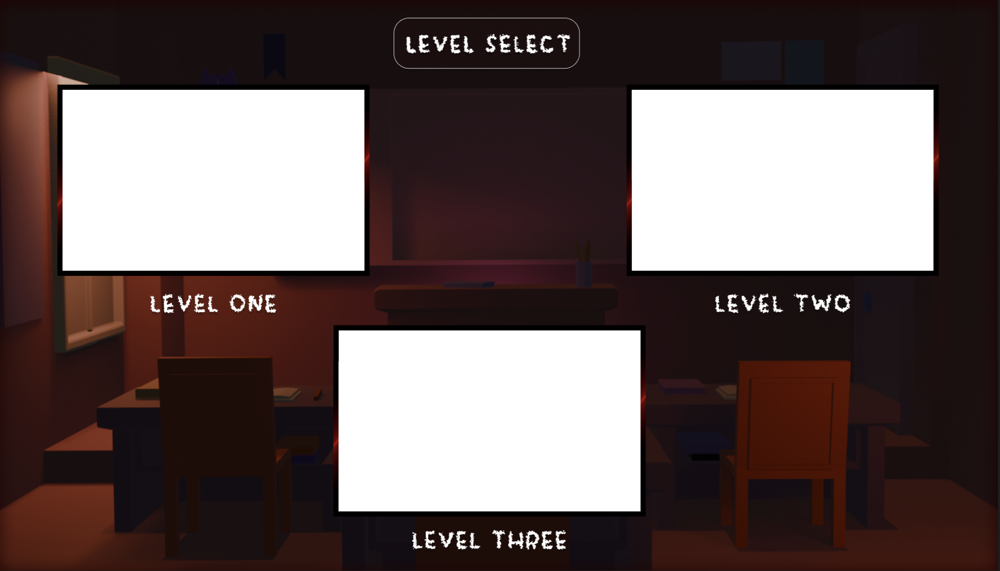
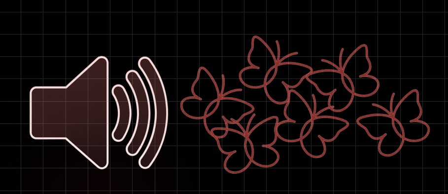
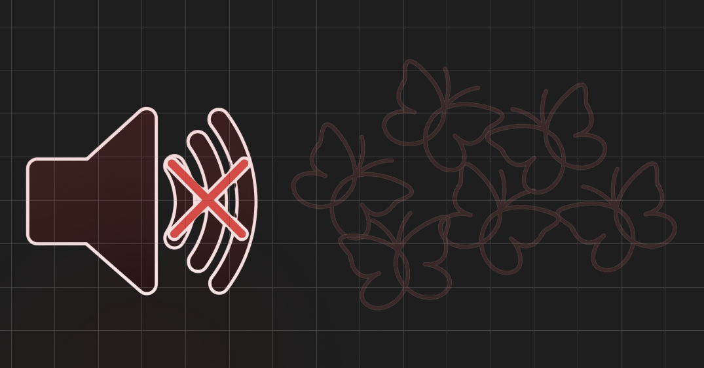

Unraveling is a tense, paranoia-themed game built by VGDev, Georgia Tech's video game development club. I'm one of its UI designers, and my job is to make the interface feel like part of that uneasy world while still being clear and usable while someone plays.
Overview
Designing UI that fits a paranoid mood
On a game this size, the interface can easily feel bolted on, a layer of generic menus floating over a world that has nothing to do with them. My aim is the opposite: menus, screens, and controls that belong to Unraveling's dark, on-edge tone, so the UI adds to the atmosphere instead of breaking it. Every screen is a chance to keep the player inside the game's headspace, even when they've paused to change a setting or pick a level.
The constant tension is mood versus clarity. A screen can look unsettling, washed in red light and visual noise, but a player still has to parse it instantly in the middle of a tense moment. If a menu is beautiful but confusing, it pulls people out of the experience as fast as a menu that's clear but generic. So I treat legibility as a hard constraint and the paranoid styling as the layer I build on top of it, rather than the other way around.
I design in Figma and work inside a 100+ member team, which changes how I work as much as what I make. My pieces have to match a shared visual direction, slot in next to other designers' screens without looking like a different game, and hold up to rounds of feedback from both designers and developers. I resolve the mood-versus-clarity tension by keeping the styling dark and tense while the structure, the layout, labels, hierarchy, and states, stays simple, consistent, and readable.
Contributions
What I've designed
My work spans the moments a player meets the interface most: the first screens on launch, the menus they return to between runs, the elements that sit on screen during play, and the atmospheric touches that keep the tension alive even in the UI. Each piece below had to earn its place in the game's look while staying effortless to use.
Start screens
Entry screens that set the game's tone the moment it opens.
Menus
Navigation and settings laid out to stay legible against the dark theme.
In-game UI
On-screen elements that work during play without pulling focus from the game.
Paranoia overlay
A screen treatment that makes the player feel watched and uneasy.
Music toggle
An in-game sound control with clear on and muted states.
Menus & screens
Settings and level select
These are the full-screen menus players spend the most time in, so they're where the mood-versus-clarity balance matters most. Both carry the game's dark, uneasy tone while staying easy to scan. In the settings panel I kept the controls to familiar slider patterns so people can adjust music, brightness, sensitivity, and SFX without hunting, letting the red-lit background do the atmospheric work instead of the controls themselves. The level select frames each stage as a clear preview card, so choosing where to go stays obvious even as the room behind it keeps the player on edge.


Atmosphere
The paranoia overlay
The overlay is the clearest example of UI doing emotional work rather than just conveying information. Its only job is to make the player feel watched and on edge as they move through the game. The hard part was designing something that reads as unsettling without ever obscuring what's happening underneath it, so I built it to sit inside the game's dark visual language and hold up over whatever is on screen at the time, light rooms or dark, calm beats or chaos.
Interaction
Music toggle: two clear states
A small control, but a good test of the whole approach. For the in-game music toggle I designed both states so a player can tell at a glance whether sound is playing, no guessing, no accidental double-taps. Keeping the on and muted states visually consistent, same shape and placement, only the state changing, makes it instantly readable and keeps it in step with the rest of the interface. It's the kind of detail that's invisible when it works and annoying the moment it doesn't, which is exactly why it was worth getting right.


What I'm taking from it. Designing inside a 100+ person team taught me to make UI that serves both the mood and the player, and to treat feedback as part of the craft, revising my work so it fits a shared direction rather than just my own taste. It also pushed me to hold a clear principle under pressure: atmosphere is the styling layer, legibility is non-negotiable. The result is a set of interface pieces, start screens, menus, the paranoia overlay, and the music toggle, that look like they belong in Unraveling while still giving players clear, immediate feedback the instant they need it.